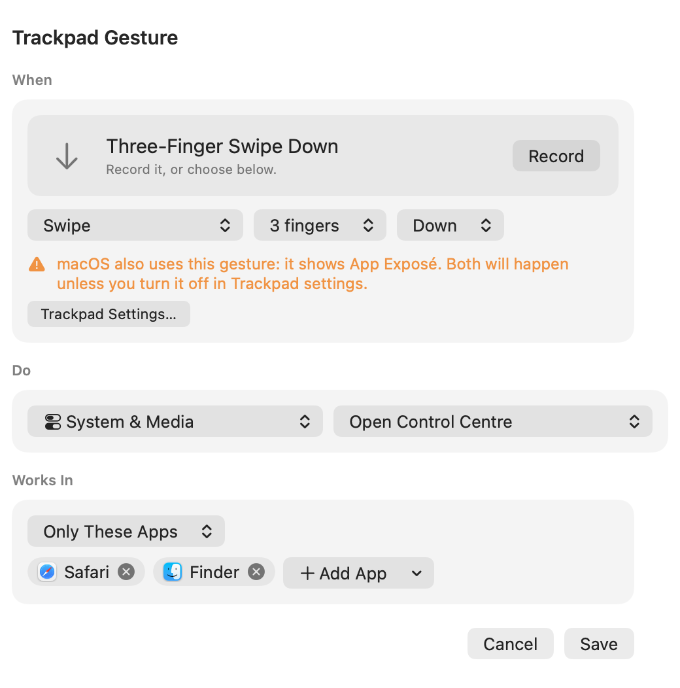
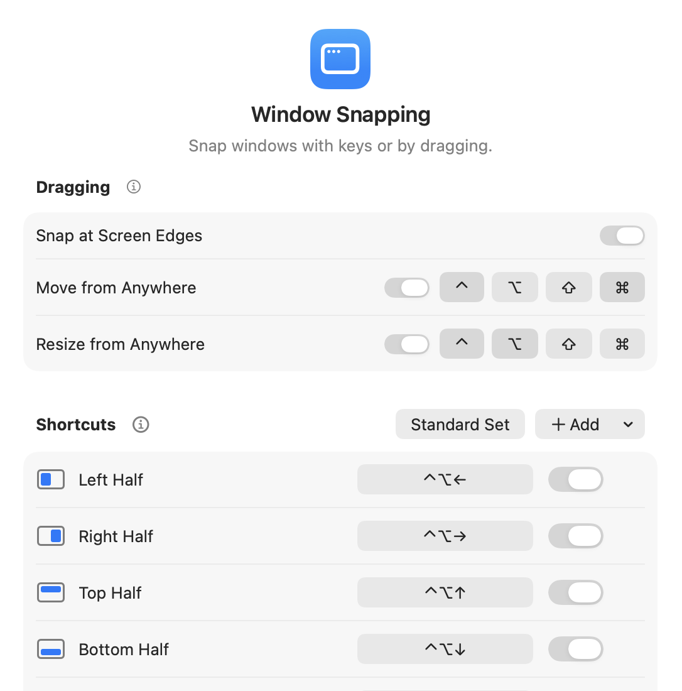
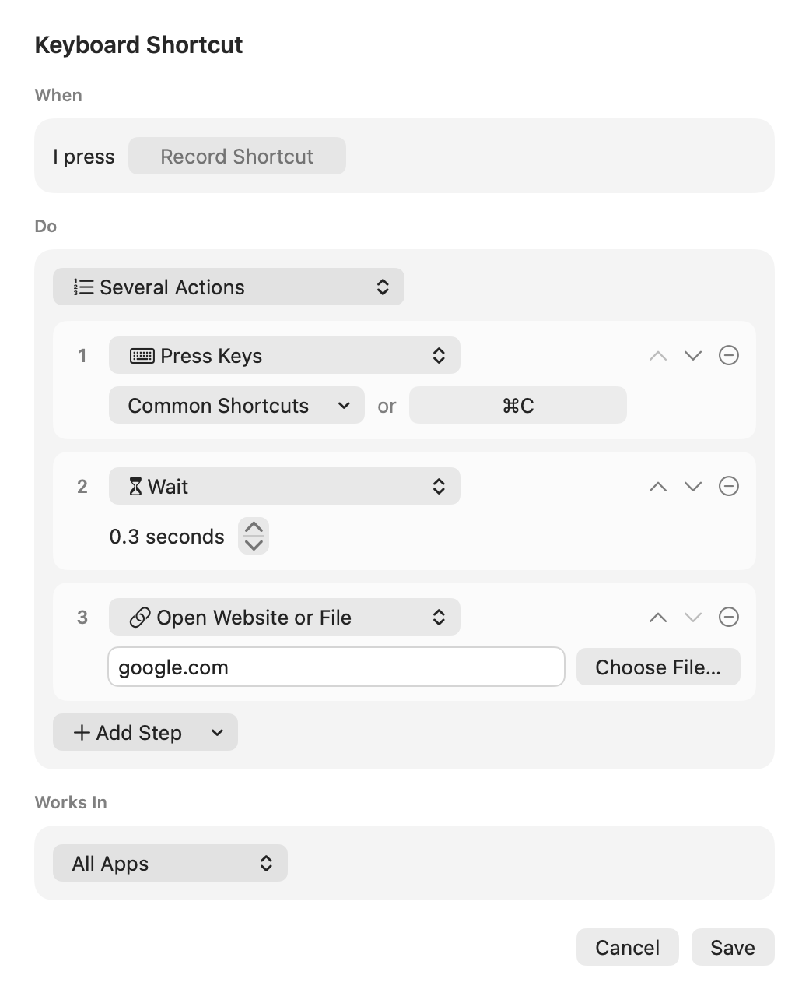
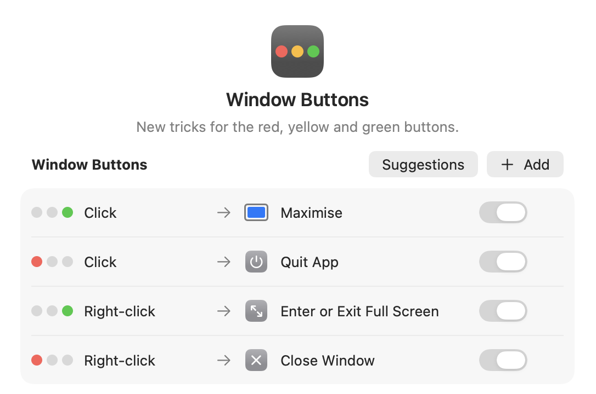

Customise your keyboard shortcuts, trackpad gestures and mouse buttons.
Version 0.2 · Free and open source · macOS 15 or later
Each rule has a trigger, an action, and the apps it applies to. Any trigger can run any action.
A keyboard shortcut, trackpad gesture, mouse button, typed abbreviation, a click on a window's red, yellow or green button, or an event such as an app opening.
Open an app or website, type text, press keys, move a window, control media, run a script, or several of these in a row.
All apps, only some, or all except some. A rule for a specific app wins, so one gesture can do different things in different apps.
| Name | What it does |
|---|---|
Keyboard shortcuts | Any key combination can run any action. Caps Lock can also work as a Hyper key: hold it for ⌃⌥⇧⌘, tap it for Caps Lock. |
Window layouts | Save the position of every open window under a name, then put them all back with one shortcut. |
Mouse buttons | Assign actions to extra mouse buttons. Set the scroll direction for the mouse separately from the trackpad, and turn on smooth scrolling. |
Text shortcuts | Type an abbreviation like ;email and it is replaced with the full text. An abbreviation can also run an action. |
Clipboard history | Search and paste anything you copied earlier, and pin what you use often. Password manager items are skipped, and the history stays on your Mac. |
Custom menus | Build your own menus of actions and show them in the menu bar or at the pointer. |
Selected text | Change the case of selected text, sort lines, search the web for it, have it read aloud, or paste as plain text. |
Automations | Run actions when an app opens or quits, or when your Mac wakes, sleeps, locks or is plugged in. |
Black menu bar | Turns the menu bar black so the notch blends in. Set it for each screen. |
Pick a gesture from the list or record one by doing it on the trackpad. Then choose what it does, and which apps it works in.

Press a half or corner shortcut again to cycle its width through ½, ⅓ and ⅔. Drag a window to a screen edge to snap it, or hold ⌃⌘ and drag anywhere inside a window to move it.

One trigger can run a list of actions, with optional pauses between them. There are also actions for AppleScript, shell scripts and choosing an item from the current app's menus.

A click or right-click on a window's red, yellow or green button can run any action. It applies to the window you clicked, even if it's in the background.

Version 0.2
Requires macOS 15 or later, on Apple silicon or Intel. Trackpad gestures rely on a private macOS framework and may break in a future macOS update.
git clone https://github.com/sloppyjoo/Shortie.git cd Shortie open Glide.xcodeproj
Older versions and release notes are on the Releases page.